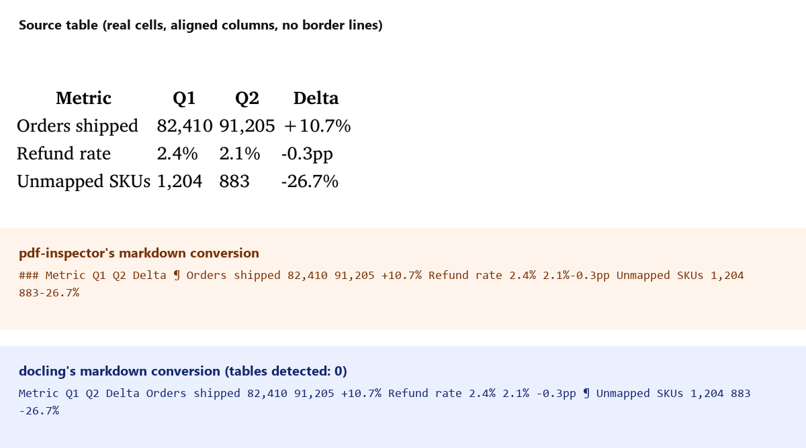

Testing docling on the exact table pdf-inspector already failed on
A previous post here tested pdf-inspector, a fast PDF classifier. It correctly labeled three test PDFs as text-based, scanned, or mixed, but its Markdown conversion mangled a borderless table into one run-on paragraph. Docling (IBM, MIT license) is a heavier tool aimed at exactly that job: layout detection, OCR, and a dedicated table-structure model (TableFormer), not a fast heuristic classifier.
What you can expect from this post: the same three PDFs from the pdf-inspector test, run through Docling instead, checked against three things. Does Docling's own OCR produce readable text from a page with zero text layer. Does its table-structure model catch a table with real aligned cells but no drawn border lines, the exact case that broke pdf-inspector. Does anything else survive or break in the conversion. Docling ran locally, CPU only, no paid API.
What I ran
| Step | Call | Result |
|---|---|---|
| Convert the text-based PDF | DocumentConverter().convert(path) | 49.8s including one-time model load. Zero tables detected via doc.tables and confirmed again by walking every TableItem in the document |
| Convert the scanned PDF (image only, zero text layer) | Same call | 12.5s. Full paragraph and list text recovered through OCR, closely matching the source |
| Convert the mixed PDF (real text page, then a scanned page) | Same call | 15.0s. Both pages converted, native-text path on page 1, OCR path on page 2, concatenated into one document |
Docling's table-structure model is on by default: I checked PdfPipelineOptions().do_table_structure, confirmed True before ruling anything out as a config miss.

Same table, same failure shape twice. Docling's own README leads with TableFormer as a headline feature, and on this file it detected zero tables, same result pdf-inspector produced. The columns are aligned and the cell values are real, so a layout model working from the rendered page image should have a visual signal to work from, even without border lines. It didn't use it.
What else changed between the two conversion paths
Docling extracts each page through one of two paths depending on whether it has a native text layer: direct text extraction, or OCR through RapidOCR when the page is an image. Running the same source content through both paths surfaced three more differences.
Headings survived OCR better than native extraction. In the pdf-inspector test, one of two identically styled <h3> headings dropped out of the conversion entirely. Docling kept both, ## Fulfillment renders correctly on every one of the three PDFs, native-text and OCR paths alike.
The bullet list flipped depending on path. The native-text path kept the source's raw bullet glyph as a literal character (· Average ship time held at 1.8 days), not a Markdown list. The OCR path on the same content produced a real - Average ship time held at 1.8 days list. The image-based layout model recognized list structure that the direct-text path didn't bother converting.
OCR reordered a numbered list. The source's three-item list came back from OCR as 1. Close the Warehouse B staffing gap, 3. Re-run this report..., 2. Finish SKU mapping backlog..., items 2 and 3 swapped. Whatever position OCR read the text boxes in didn't match reading order.
The hyperlink and footnote both dropped, on every path. The one link in the source document (the pdf-inspector repo) came back as plain text in all three conversions, no [text](url) anywhere in any of the six output files. The footnote marker came back as a bare 1 glued onto the previous sentence, same failure pdf-inspector had, worded slightly differently.
My thoughts
The OCR path is the real win here: pdf-inspector only tells you a page needs OCR, it doesn't do it. Docling produces readable text from a zero-text-layer page unattended, close enough to the source that I'd trust it as a first pass on real scans.
I would not trust the table extraction, and that's the one feature I most wanted to work. TableFormer is the headline capability in Docling's own documentation, and it missed a real table with aligned columns and correct cell data on a one-page test file, the same failure mode a much simpler heuristic tool already had. Two different projects, two different detection approaches, one shared blind spot: a table with no drawn border lines. If your source PDFs are also generated (invoices, reports, anything built from a template rather than scanned from paper), border-line-dependent table detection is worth checking directly against your own files before trusting either tool's table output unattended.
Appendix: building this comparison
| Problem | Cause | Fix |
|---|---|---|
| Needed to confirm the table miss wasn't a disabled setting | Docling ships several pipeline options and it wasn't obvious which were on by default | Checked PdfPipelineOptions().do_table_structure directly in code before writing anything up: True |
doc.tables alone felt like one code path to trust | A property could return an empty list even if tables existed elsewhere in the document tree | Cross-checked by walking doc.iterate_items() for every TableItem, got the same zero |
| Comparison image needed to show three different mangled outputs at once without dumping raw code fences | A wall of monospace text is hard to scan for what actually changed | Cropped the real source table from the PDF, stacked it above two labeled panels showing each tool's broken output side by side |